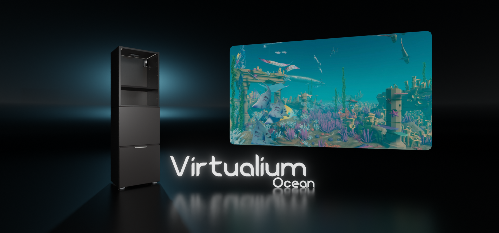
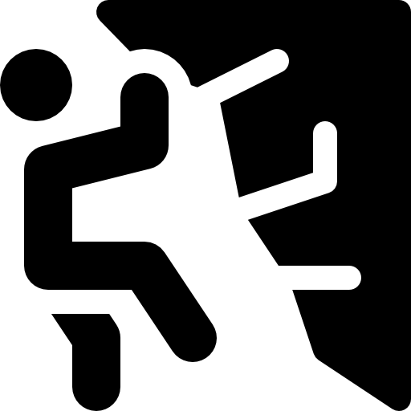
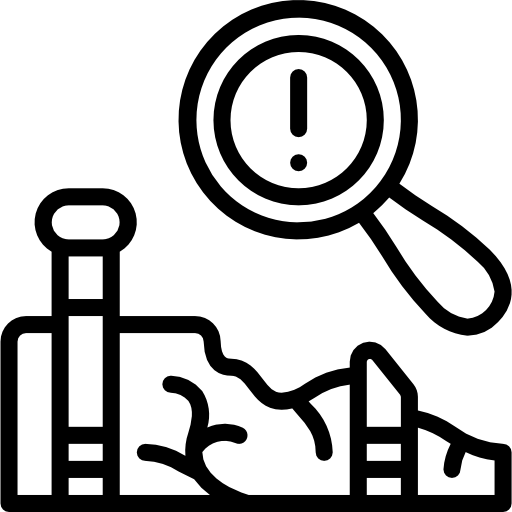

• Etudes
Bac STI2D
J'ai obtenu mon baccalauréat STI2D avec mention au lycée Louis Aragon à Héricourt (70) en 2015. C'est à cette période que j'ai pris goût à la Technique et pris la décision d'en faire mon avenir.
Formation ingénieur
J'ai intégré en 2015 l'Université de Technologie de Belfort-Montbéliard (UTBM) où j'y ai étudié pendant quatre ans. J'en tire, de ces années, des connaissances approfondies dans diverses branches des sciences ainsi qu'une rigueur de travail et une capacité d'apprentissage indispensable pour le développement.
Formation jeu vidéo
Je suis actuellement à l'école Ludus Académie (Strasbourg) depuis 2019. J'y développe mes compétences en programmation et conception de jeux. J'ai eu l'occasion, à de nombreuses reprises, de mettre à l'épreuve mes compétences au travers de divers projets (solo ou en équipe). Actuellement, je finalise ma dernière année à Ludus en vue de l'obtention du diplôme Master en Chef de projet.
• Compétences


Gestion de projet
Durant mes études, j'ai appris à m'organiser et à plannifier des projets. L'aspect organisationnel représente une part importante de notre formation et est systématiquement abordé lors de la réalisation de projets. Aujourd'hui, je suis capable de cadrer précisemment un projet, de le planifier, d'en gérer les ressources, d'en gérer les limites et d'en suivre l'avancée.
Programmation
Algorithme
Je suis particulièrement à l'aise avec le C, C++ et le C#. C'est au travers de ces langages que j'ai appris la programmation sous toutes ses formes. De plus, c'est via le C# sur Unity3D que je m'exprime le mieux car c'est mon outils de travail principal. J'ai, également, des compétences solides en Web statique et dynamique. J'ai su développer mes compétences fullstack au travers de divers projets de développement de sites ou d'outils Web.
Moteur
Concernant les moteurs, je me spécialise sur Unity3D. J'ai rapidement privilégié ce moteur car il me permet de réaliser des projets de n'importe quelle nature. Je maîtrise, aujourd'hui, le modèle HDRP de Unity3D pour des rendus plus cinématographiques et je me forme continuellement aux nouvelles fonctionnalités apportées.
Modélisation 3D
CAO
Durant la formation ingénieur, j'ai appris à utiliser des logiciels de modélisation très poussés (Catia, SolidWorks). J'ai appris à modéliser et à paramétrer des pièces et assemblages complexes pour la production industrielle.
MAO
J'ai appris en autodidacte à utiliser le logiciel Blender. Je maîtrise entièrement la chaîne de création de mes modèles 3D (modélisation, sculpting, rigging, animation, UVmapping, texturing). Mes compétences, dans ce domaine, me permettent de créer moi-même les assets de mes jeux. De plus, cela me permet de m'assurer que mes assets répondent parfaitement à mes besoins de style, de fonctionnalité et de performance.
Game Design
La formation Ludus nous enseigne les différents outils de Game Design. Ces outils nous permettent de conceptualiser des jeux (vidéos ou non) originaux et d'élaborer des projets structurés et bien définits. Cette discipline mélange écriture et gestion de projet. Une étape essentielle dans le processus de création de jeu.
• Projets & ambitions
ARM Project
Le jeu ARM Project est une demo de jeu d'horreur dans lequel le joueur incarne Franck, un employé de bureau de la ARM. Lors de ses heures supplémentaires, rien ne se passera comme prévu pour Franck.
Il s'agit d'un projet utilisant le moteur Unity3D en HDRP. Le premier prototype a été développé à l'occasion du premier confinement français (printemps 2020). Aujourd'hui le jeu est disponible sur Itch.io

Entomocene - The Insect Age
Entomocene - The Insect Age, est un projet de jeu de survie horrifique en caméra vue du dessus. L'univers de ce jeu s'encrerait dans un monde post-apocalyptique dans lequel la chaîne alimentaire se serait inversée. Les insectes autrefois insignifiants, seraient désormais de géants prédateurs.
Ce projet est actuellement en cours de développement. Vous pouvez suivre ses avancées sur Instagram.

Sealion
Sealion est une entreprise que j'ai monté avec deux autres collaborateurs. Nous y développons un produit innovant : le Virtualium. Ce produit apporte au public des univers vituels intéractif dans lesquel on peut vitualiser un dessin pour le voir prendre vie.
Et ensuite ?
Aujourd'hui
Aujourd'hui, j'ai la volonté de finir mes études en donnant le meilleur de moi-même afin de me propulser dans le monde du travail. J'ai trouvé ma passion et j'en fais mon métier. Je m'associe avec des personnes talentueuses et passionnées qui me permerttent réaliser de belle choses.
Demain
Demain, j'aimerai continuer à m'améliorer tout en travaillant sur des projets plus concrets. J'aimerai également que mon travail soit remarqué et valoriser. C'est pourquoi je me donne à fond.
• Expériences professionnelles
2022 - 2024 | Sealion
Strasbourg, France
Développeur multimédia interactif, Multimédia intéractif et événementiel.
Développeur logiciel, Logiciel sur mesure.
2022 - 2024 | LOB'PSE
Pont à Mousson, France
Développeur de jeu, Jeu sérieux sur Unity.
2021 - 2022 | DOOZ Escape Game
Strasbourg, France
Développeur de jeu, Jeu mobile type Pokemon Go et environnements intéractifs pour salle d'escape game.
• Loisirs
Arts


Sports
 